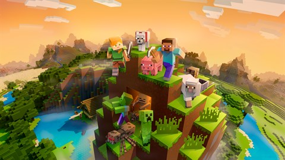

Minecraft is never finished; it is constantly being developed further. Creators are constantly working on new content or updates. An update is a bundle of changes to official Minecraft game clients that are released periodically by Mojang Studios.
Updates to Minecraft may add, remove, or tweak features such as blocks, items, entities, and game mechanics.
1.0.0 (displayed as 1.0 in the launcher), the second release of the Adventure Update, and the first full version of the game, was released on November 18, 2011, during MINECON 2011, marking the game as officially released after two and a half years (916 days) of development. This version adds brewing, enchanting, the End, Hardcore mode, breeding and more. It is the last version of Minecraft Notch developed before he gave the creative development position to Jens Bergensten.
the main features of the update are
- The end
- Enchanting
- Potions
- Breeding
Find out more about the update
1.1 is a major update to Java Edition released on January 12, 2012, which adds spawn eggs, support for multiple languages, the Superflat world type, and beaches. It is the first update to begin using snapshots, to add 56 languages, and the first major release that did not introduce any new blocks. There were no subsequent minor versions to 1.1. It was the first version to be released under Jens Bergensten as the lead creative developer of Minecraft.
the main features of the update are
- Spawn eggs
- Superflat worlds
- Beaches
Find out more about the update
1.2.1 is a major update to Minecraft (Java Edition) released on March 1, 2012, which adds a new height limit of 256 blocks (changed from 128) as a result of the new Anvil file format, zombie sieges, and generated features including jungle biomes, wooden bridges in mineshafts, and desert wells. It also added new blocks and items – bottles o' enchanting, redstone lamps, fire charges and chiseled stone bricks – and two new mobs, iron golems and ocelots.
the main features of the update are
- Jungles
- Iron golems
- Ocelots
- Redstone lamps
Find out more about the update
1.3.1 is a major update to Java Edition released on August 1, 2012, which added trading, Adventure mode, new generated structures (jungle and desert pyramids), and new blocks/items including emeralds, book and quills, written books, and tripwire. It also adds ender chests, improved enchanting and splits the Creative inventory into separate sections. This is the first version to use an internal multiplayer server in singleplayer worlds. Initially Mojang were going to add rubies, but replaced those with emeralds. While it was not the only 1.3 release, it was the only one before the snapshots of 1.4.2 started.
the main features of the update are
- Villager trading
- Desert temples
- Jungle temples
- Emeralds
- Ender chests
Find out more about the update
The Pretty Scary Update is the name for Java Edition 1.4.2, a major update officially released on October 25, 2012. Among the main changes were a number of new mobs and variants (witches, bats, zombie villagers, wither skeletons), wearable and placeable heads, a new boss (the wither), the command block, the anvil, the beacon, new food (potatoes, carrots and pumpkin pies), carrots on sticks for controlling pigs, the Nether Star, and new decoration items (such as item frames, flower pots and cobblestone walls).
the main features of the update are
- Withers
- Anvils
- Command blocks
- Beacons
- Bats
Find out more about the update
The Redstone Update is the name for Java Edition 1.5, a major update released on March 13, 2013. Among the main changes were a number of new redstone-related blocks, including the comparator, hopper, dropper, daylight sensor, trapped chest, weighted pressure plates and block of redstone. A new decorative block – block of quartz, crafted from nether quartz – was also added. Also included was a scoreboard system, a new texture pack format and a lighting engine optimization.
the main features of the update are
- Hopper
- Block od redstone
- Daylight sensor
- Redstone comparator
- Trapped chest
- Neather quartz
Find out more about the update
The Horse Update is the name for Java Edition 1.6.1, a major update released on July 1, 2013. It added many new features such as horses, leads, coal blocks, carpets, resource packs and a new launcher.
the main features of the update are
- Horses
- Leads
- Coal blocks
- Carpets
Find out more about the update
The Update that Changed the World is the name for Java Edition 1.7.2, a major update released on October 25, 2013. It added many new features such as a new terrain generator, many new biomes and biome variations, stained glass, red sand, new tree types, a new spawn system, new fish and a new fishing system with rewards, many new flowers, many more customization options, custom-size Nether portals up to 23×23, command blocks in minecarts, and many new commands.
the main features of the update are
- 11 new biomes
- New world generator
- Stained glass
Find out more about the update
The Bountiful Update is the name for Java Edition 1.8, a major update that was released on September 2, 2014. The update has two main themes, one being features added for mapmakers and the other being new survival features.
the main features of the update are
- Ocean monuments
- Slime blocks
- Granite, Andesite and Diorite
- Rabbits
- Endermites
Find out more about the update
The Combat Update is the name for Java Edition 1.9, a major update released on February 29, 2016. This update overhauled the combat system, among other additions and changes. The official name for the update, the Combat Update, was discovered on April 1, 2015, by Reddit user 3dDeters (and several others independently) who found a QR code hidden in the snow falling pattern of the April Fools 15w14a snapshot. The development team called the release feature-complete by the end of October 2015, although the update was pushed to 2016 as the developers "want to fix more bugs before release, and keep the game stable over the holidays".
the main features of the update are
- End cities
- Elytra wings
- Combat changes
- Outer end islands
- Shulkers
- Sheilds
Find out more about the update
The Frostburn Update is the name for Java Edition 1.10, a major update released on June 8, 2016. It added some new features such as skeleton/zombie variants in snowy biomes and deserts respectively, polar bears, structure blocks for saving/loading structures in worlds, and an auto-jump feature. The official name for the update, the Frostburn Update, was revealed on June 8, 2016, in a blog post on the Mojang website, the same day the update was released.
the main features of the update are
- Polar bears
- Magma blocks
- Strays
- Husks
Find out more about the update
The Exploration Update is the name for Java Edition 1.11, a major update released on November 14, 2016. The official name for the update, the Exploration Update, was revealed on September 24, 2016, during the Opening Ceremony at MINECON 2016. During the "Casual Chat with Jens" panel at MINECON, he suggested that the name "Expedition Update" was more suitable to the theme of the update compared to the "Exploration Update".
the main features of the update are
- Woodland mansions
- Shulker boxes
- Totems of undying
- Llamas
Find out more about the update
The World of Color Update is the name for Java Edition 1.12, a major update released on June 7, 2017. The official name for the update, the World of Color Update, was revealed on March 13, 2017, in a Reddit post by Owen Jones.
the main features of the update are
- Colored concrete
- Colored concrete powder
- Glazed terracotta
- Parrots
Find out more about the update
Fun fact i first started playing the game when the 1.12 update came out
The Update Aquatic is the name for a major update that was released for most versions of Minecraft in 2018, with the exception of the Xbox One, Nintendo Switch, and New Nintendo 3DS editions. The Update Aquatic focuses on revamping the oceans in Minecraft, adding many new aquatic mobs, blocks, items and structures. The update marks the advent of the trend of major themed content updates being released across certain editions relatively simultaneously, rather than across differently-titled, unrelated-sounding updates per edition.
the main features of the update are
- Kelp and Seagrass
- Fish mobs
- Dolphins
- The drowned
- Tridents
- Turtles
- Coral reefs
- Conduits
- Phantoms
Find out more about the update
Village & Pillage is the name for a major update themed around overhauling villages that was released for Java Edition, Bedrock Edition, PlayStation 4 Edition, and Minecraft Education. This update was released for Java Edition as version 1.14 on April 23, 2019. The update's development started with snapshot 18w43a. The first pre-release for Java Edition 1.14 was released on April 10, 2019, followed by the second on April 12, the third on April 16, the fourth on April 17, and the fifth on April 18.
the main features of the update are
- Village overhaul
- Raids
- pillagers
- Texture update
- Foxes
- Pandas
- Bamboo forests
Find out more about the update
Buzzy Bees is a major update mainly focused on bees and the items relating to them, as well as also fixing bugs from previous versions. The update was released on December 10, 2019, only for the Java and Bedrock editions of Minecraft.
the main features of the update are
- Bees
- Beehives
- Bee nests
- Honey blocks
- Honey bottles
- Honey combs
- Honeycomb blocks
Find out more about the update
The Nether Update is a major update themed around revamping the Nether. It adds multiple new features to this dimension, such as new biomes and mobs. The update was announced at MINECON Live 2019[1] and was released on June 23, 2020, only for the Java and Bedrock editions of Minecraft. It was released as Java Edition 1.16 and Bedrock Edition 1.16.0. This update's development on Java Edition started with snapshot 20w06a, which was released on February 5, 2020. The first pre-release was released on June 4, 2020, followed by the second on June 5, the third on June 10, the fourth on June 11, the fifth on June 12, the sixth on June 15, the seventh on June 16, and the eighth on June 17. The only release candidate was released on June 18.
the main features of the update are
- Warped forests
- Crimson forests
- Soulsand valleys
- Piglins
- Hoglins
- Striders
- Many new nether blocks
- Netherite
- Netherite tools and armor
Find out more about the update
1.17, the first release of Caves & Cliffs: Part I, is a major update to Java Edition announced at Minecraft Live 2020 and released on June 8, 2021. On April 14, 2021, Mojang Studios announced that the update would be split into two updates due to the amount and complexity of content, as well as team health. Multiple features such as revamped mountain and cave generation, the lush caves and dripstone caves biomes, and increased world height were removed in 21w15a, and were subsequently released in 1.18. A data pack was included in the Minecraft.net article for 21w15a that re-enabled the removed features, and subsequent snapshots updated this data pack.
the main features of the update are
- Various cave plants
- Axolotls
- Glow squids
- Copper
- Amethyst geodes
- Goats
- Raw ore
- Candles
- More stone blocks
Find out more about the update
1.18, the first release of Caves & Cliffs: Part II, is a major update to Java Edition released on November 30, 2021. It completely overhauls the Overworld generation, with larger caves, taller mountains, new mountain biomes, new cave biomes, and flooded caves. It was first announced alongside the release of 1.17 snapshot 21w15a when Mojang Studios stated that the Caves & Cliffs update would be split in two. Some features for 1.18 were initially implemented during 1.17's development cycle, before getting postponed and relegated to official data packs used with a corresponding 1.17 snapshot.
the main features of the update are
- Completely overhauled world generation
- Added huge and complex cave systems
- Much more varied and extreme terrain generation
- Radically changed ore distibution
- Increased overworld height limit 64 blocks downwards
Find out more about the update
1.19, the first release of The Wild Update, is a major update to Java Edition, released on June 7, 2022. The update was first announced on October 16, 2021, during Minecraft Live 2021. It introduces brand-new materials, blocks, and locations, such as the deep dark and mangrove swamp biomes; ancient cities; mobs like the warden, the frog, the tadpole, and the allay, as well as new items obtainable only in these new biomes.
the main features of the update are
- The deep dark
- Skulk blocks
- Ancient cities
- The warden
- Mangrove swamps
- Frogs
- Allays
Find out more about the update
1.20, the first release of Trails & Tales, is a major update to Java Edition released on June 7, 2023. Originally announced at Minecraft Live 2022 on October 15, 2022, the name of the update was revealed at Minecraft Monthly on March 2, 2023. Trails & Tales focuses on letting the players express themselves through new building blocks and storytelling. It introduces trail ruins, the camel and sniffer mobs, the archaeology system, the cherry grove biome, and other features.
the main features of the update are
- Archeology features
- Brushes and suspicious sand
- Ancient seeds and plants
- Pottery
- Camels
- Sniffers
- Cherry trees
- Armor trims
Find out more about the update
1.21, the first release of Tricky Trials, is a major update to Java Edition released on June 13, 2024. Originally announced at Minecraft Live 2023 on October 15, 2023, the name of the update was revealed in a Minecraft Monthly on April 26, 2024. The update was said to focus on "combat adventures and tinkering" and introduces several copper block variants and a new structure called trial chambers, as well as the new crafter, new tuff variants, the new mace weapon, twenty new paintings, and new hostile mobs that spawn in the trial chambers, amongst others. It also includes some changes to the Bad Omen effect and many bug fixes.
the main features of the update are
- Trial chambers
- Mace
- Trial and ominous keys
- Trial spawners
- Vaults
- New mobs
Find out more about the update